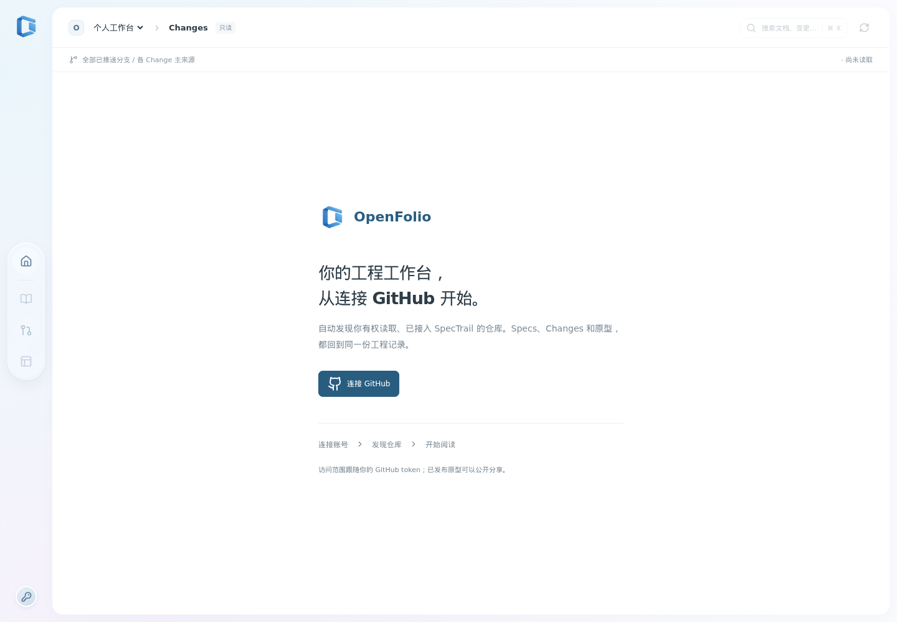

按能力目录阅读已实现的规格，查看来源分支与正文。
从连接 GitHub 开始
你的项目，回到同一处阅读。
Agent 在项目里推进工作，工作台读取已经推送的结果。项目上下文、文档、任务状态和关联原型一起展示，方便你与协作者理解当前工程。

聚合已推送分支上的 Change，查看任务、依赖、证据与归档。
浏览当前页面和组件原型，打开对应 Change 的固定版本。
个人连接
使用你自己的 GitHub 权限。
- 打开已部署的 OpenFolio，选择“连接 GitHub”。
- 创建 GitHub token，为需要读取的仓库授权 Contents: Read-only。
- 连接验证后，工作台发现当前 token 能访问的仓库，并检查 SpecTrail 工作流。
- 选择有效仓库，开始阅读；也可以输入 GitHub HTTPS 仓库地址检查。
同一账号可以保存多个连接，分别使用不同范围的 token。工作台按你当前明确选择的连接读取仓库；组织仓库可能需要管理员审批或 SSO 授权。
阅读权限来自仓库本身。
协作者连接自己的 token，按已有仓库权限读取工程。发现与读取都取决于当前连接的实际授权范围。
中心 Git 是来源
提交推送后，刷新工作台。
工作台按记录来源展示正文和状态。Specs 来自所选分支的能力文档；Changes 聚合已推送分支中的主记录；当前原型来自默认分支的项目清单。
| 你想做什么 | 使用哪个入口 |
|---|---|
| 改变需求、任务与流程状态 | 在 Agent 中使用 SpecTrail Skill，提交并推送记录 |
| 阅读文档与核对当前进展 | 在 OpenFolio 中选择仓库、分支并刷新 |
| 维护或发布设计原型 | 在项目里使用原型子模块，登记固定引用后推送 |
| 查看历史交付 | 打开归档 Change，阅读验收证据和对应版本 |
独立 Web 服务
部署 OpenFolio，再连接项目。
使用已有 OpenFolio 实例时，向维护者获取工作台地址，连接你自己的 GitHub token 即可开始阅读。自行部署需要 OpenFolio 源码访问权限、Node.js 24、Git 与持久磁盘；Git 原型截图还需要 Playwright Chromium 及可用的系统沙箱。在源码目录中执行：
OpenFolio 构建与启动
npm ci
npx playwright install --with-deps chromium
npm run build
npm start本机入口：http://127.0.0.1:10681
远程访问通过 HTTPS 反向代理提供。OpenFolio 使用单 Node 进程、单实例和持久数据目录；具体配置、备份和升级步骤由实例维护者参考源码中的运维文档执行。
产品介绍站与工作台分别部署。
当前网站帮助你了解和接入产品。OpenFolio 服务部署完成后，使用它自己的地址连接 GitHub、阅读工程。